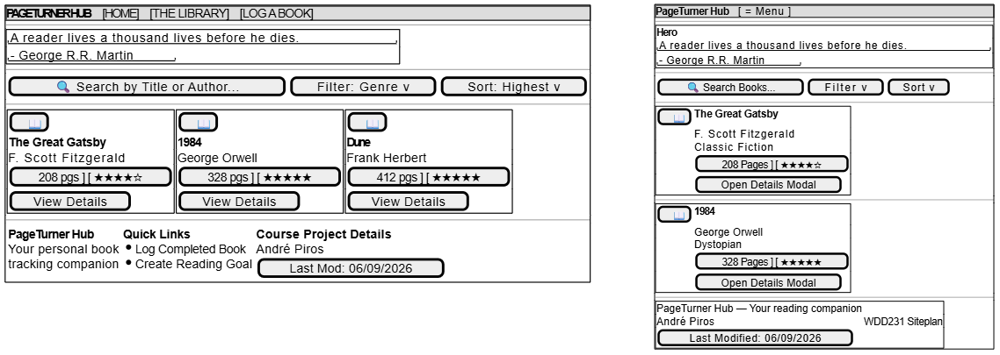

Site Name
PageTurner Hub
The name combines PageTurner — a common phrase for a book that is hard to put down — with Hub, conveying a central place to manage all things reading. The name is memorable, describes the purpose immediately, and appeals to book enthusiasts of all ages.
Optional domain: pageturnerhub.com
Site Purpose
PageTurner Hub provides book lovers with a personal reading tracker, a browsable book library with filtering and search, and a log form to record completed books and reading goals. The site helps users discover new titles, track their progress, and stay motivated through an organized, responsive interface backed by localStorage persistence.
Scenarios
- I want to keep track of books I have already read and see my progress at a glance — where can I log my completed books and set a yearly reading goal?
- I am looking for a new book to read this weekend — can I browse by genre or filter by rating to find something that suits my mood?
- I heard a great literary quote today and want to find more like it — does the site feature inspirational reading content on the home page?
Color Scheme
Primary Color: #3b2f2f(Espresso)
Secondary Color: #7c4f2f(Cognac)
Accent Color: #f0e6d8(Parchment)
Background Color: #4a7c59(Leaf)
Text Color: #f7f4ef(Ivory)
Link Color: #7a6f65(Bark)
Typography
Heading & Hero text: 'Lora', sans-serif
Body Font: 'Inter', sans-serif
Metadata & data values: 'JetBrains Mono', monospace
Wireframes
